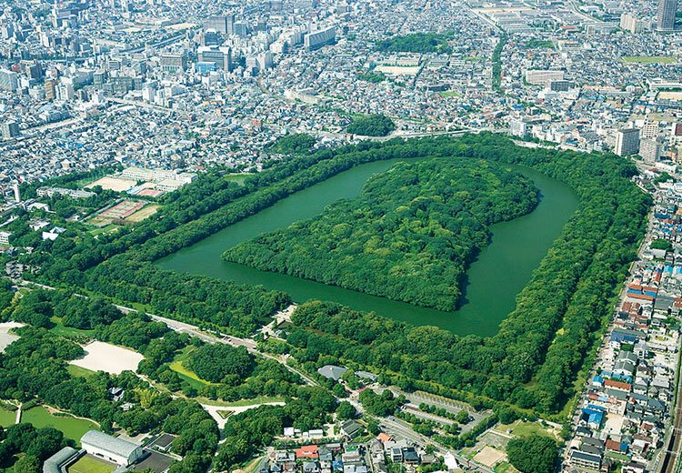
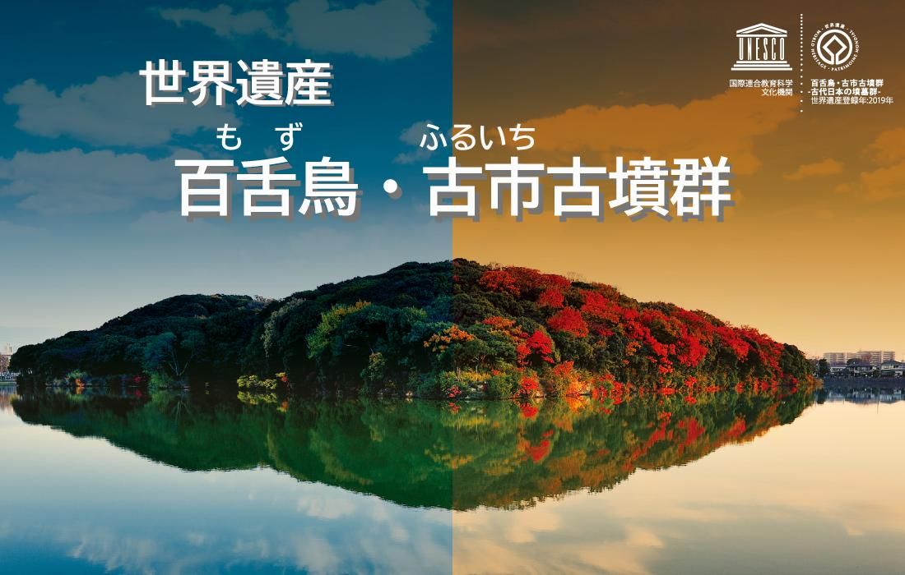

世界遺産登録までの道のり
百舌鳥古市古墳群の世界遺産登録への道のりは、長く困難なものでした。登録に向けた取り組みは1990年代から始まり、地元自治体や市民団体による保存活動や調査研究が続けられてきました。2010年には国内の暫定リストに記載され、本格的な世界遺産登録に向けた準備が始まりました。その後、ユネスコへの推薦書提出や現地調査を経て、2019年7月に「百舌鳥・古市古墳群」として正式に世界文化遺産に登録されました。この登録過程では、古墳の歴史的価値や保存状態の良さ、さらに古墳群全体としての景観的価値が高く評価されました。また登録に際しては、古墳の周辺環境の保全や観光客受け入れ体制の整備など、様々な課題に地域が一体となって取り組んだことも成功の要因となりました。

仁徳天皇陵古墳
世界遺産としての価値
百舌鳥古市古墳群が世界遺産として認められた最大の理由は、古墳時代の葬送文化と社会構造を今に伝える貴重な考古学的証拠だからです。特に仁徳天皇陵古墳（大山古墳）は全長約486mで、世界最大級の前方後円墳として知られています。この古墳群は、3世紀後半から5世紀後半にかけて築造された49基の古墳で構成され、その規模や形状の多様性、保存状態の良さが高く評価されました。また古墳群全体が示す階層的な配置は、当時の政治体制や権力構造を反映しており、日本古代国家形成期の重要な歴史的証拠となっています。さらに、これらの古墳が1500年以上にわたって都市化の進んだ大阪平野において保存されてきたことも、世界的に見ても稀有な事例として注目されています。

百舌鳥古市古墳群